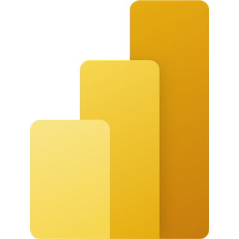
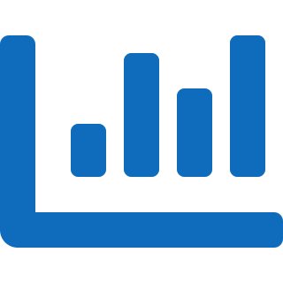
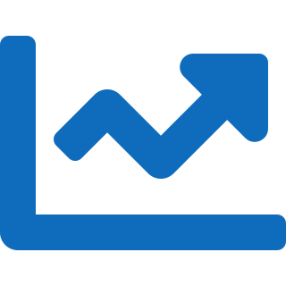

~15 min · slides
Part 1 · The Foundation
- What Power BI really is
- Desktop, Service, Mobile
- The data journey, end to end
- Power Query, model & DAX
- Visuals, interactivity & sharing

MICROSOFT POWER BIFrom raw data to decisions — an end-to-end tour.
Power BI is an end-to-end platform to connect, clean, model, visualize and share data.
Power BI starts by connecting to files, databases, SaaS platforms and APIs — not by drawing the first chart.
Where reports are built: connect, shape, model, and design your report in a free Windows app.
Everything follows this path — and the demo walks it end to end.
Power BI connects to almost anything.
Select a source and choose how the report should read it.
Clickable steps rerun automatically on each refresh.
| Order | Date | Sales | Region | Noise |
|---|
Relationships turn separate spreadsheets into one connected model that answers questions together.
Measures compute on the fly and react to whatever you click or filter.
Total Sales = SUM( Financials[Sales] )
YoY Growth % =
DIVIDE(
[Total Sales] - [Sales LY],
[Sales LY]
)Click one visual and the rest cross-filter. Drill, hover, and use slicers to find answers.


Publish to the Service, organize in workspaces, refresh automatically, and protect with row-level security.
Your report moves from Desktop to the cloud, ready for collaboration and consumption.